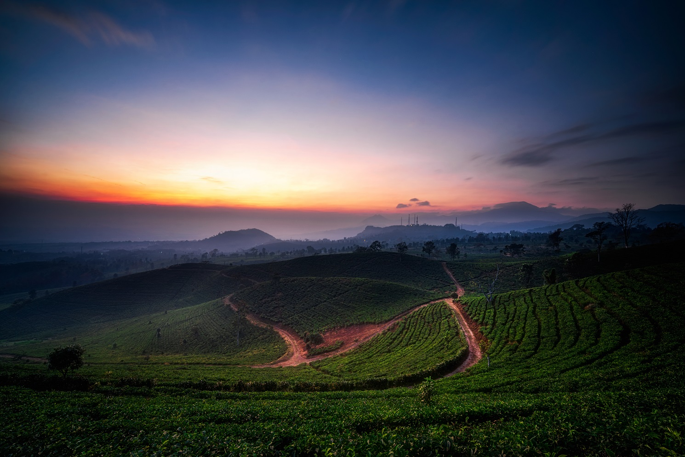
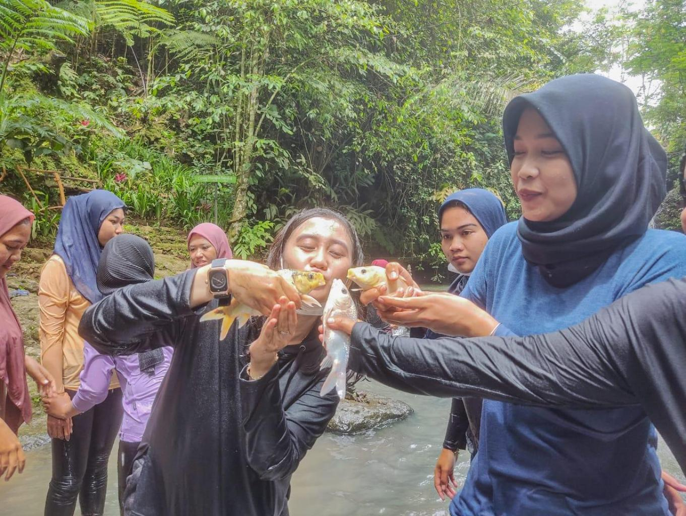
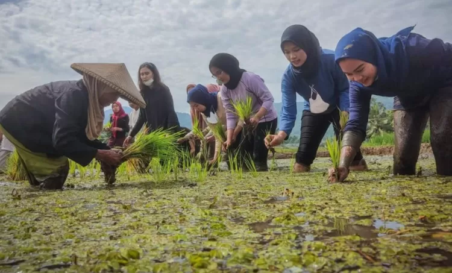
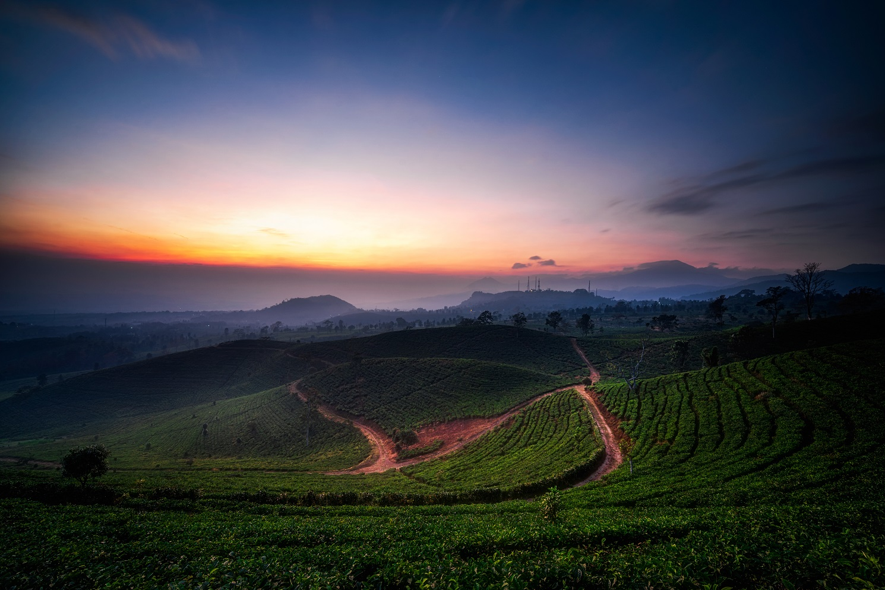
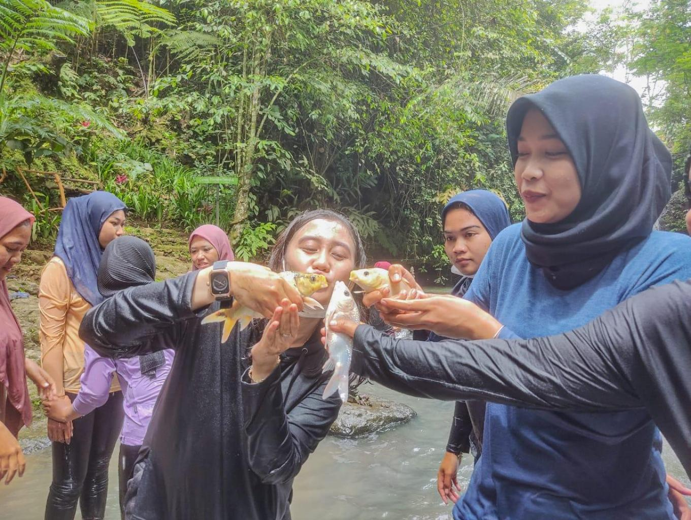
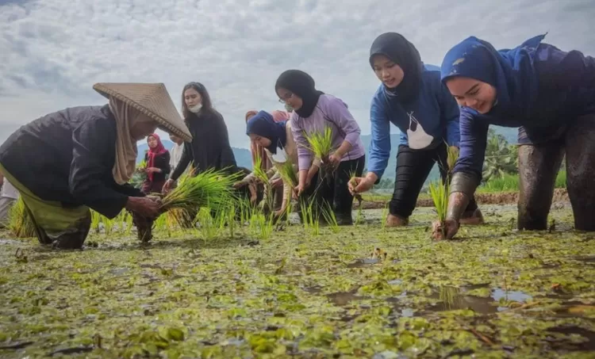

Tentang Desa Cibeusi
Desa Cibeusi adalah permata tersembunyi yang menawarkan perpaduan sempurna antara keindahan alam pedesaan, tradisi budaya yang kaya, dan keramahan penduduk lokal. Terletak di kaki pegunungan dengan hamparan sawah hijau, sungai jernih, dan udara segar, Cibeusi adalah destinasi ideal bagi Anda yang mencari ketenangan dan pengalaman otentik.
Kami berkomitmen untuk menjaga kelestarian alam dan budaya, sekaligus memberikan pengalaman wisata yang tak terlupakan bagi setiap pengunjung.

 




